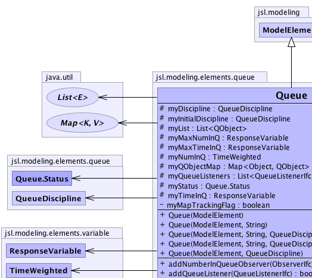
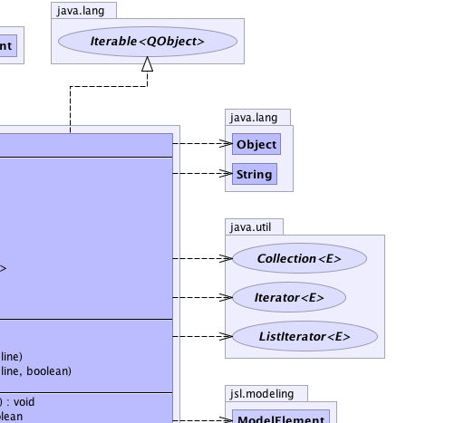
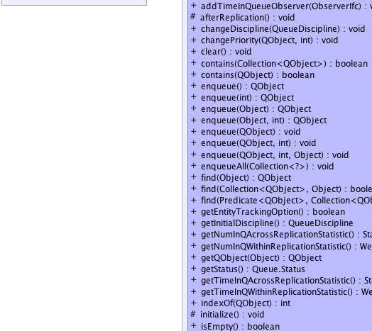
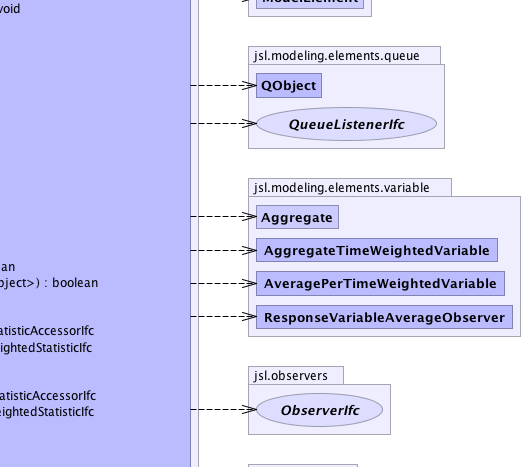
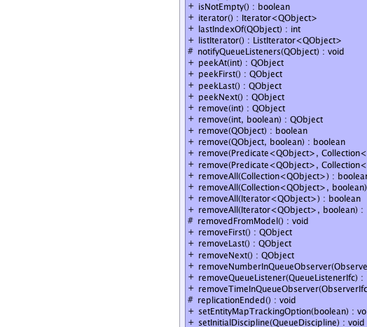
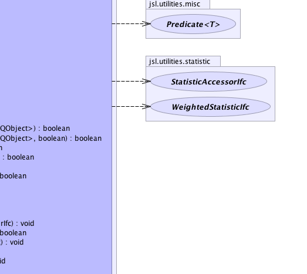
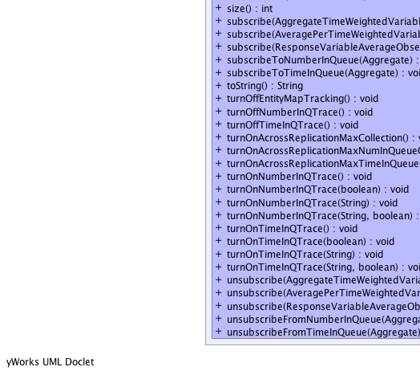
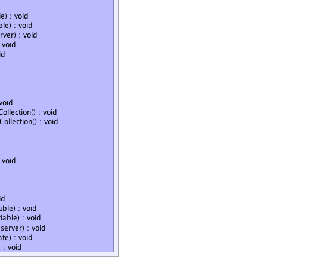

jsl.modeling.ModelElement
jsl.modeling.elements.queue.Queue
jsl.modeling.ModelElement
jsl.modeling.elements.queue.Queue
|
||||||||||
| PREV CLASS NEXT CLASS | FRAMES NO FRAMES | |||||||||
| SUMMARY: NESTED | FIELD | CONSTR | METHOD | DETAIL: FIELD | CONSTR | METHOD | |||||||||
java.lang.Object
public class Queue
The Queue class provides the ability to hold entities (QObjects) within the model. Any object can be added to a Queue. When an object is added to a Queue, the object is wrapped by a QObject which provides statistical collection. In this way, objects that queue do not need additional behavior
|  |  |
|  |  |
|  |  |
|  |  |
| Nested Class Summary | |
|---|---|
private class |
Queue.QueueListIterator
|
static class |
Queue.Status
ENQUEUED indicates that something was just enqueued DEQUEUED indicates that something was just dequeued |
| Nested classes/interfaces inherited from class jsl.modeling.ModelElement |
|---|
ModelElement.TimedUpdateEventAction, ModelElement.WarmUpEventAction |
| Field Summary | |
|---|---|
protected QueueDiscipline |
myDiscipline
The current QueueDiscipline for this Queue. |
protected QueueDiscipline |
myInitialDiscipline
The initial QueueDiscipline for this Queue. |
protected java.util.List<QObject> |
myList
The list of items in the queue. |
private boolean |
myMapTrackingFlag
turns on map association between QObjects and the objects entered in the queue |
protected ResponseVariable |
myMaxNumInQ
Can be used to collect max number in queue across replications |
protected ResponseVariable |
myMaxTimeInQ
Can be used to collect max time spent in queue across replications |
protected TimeWeighted |
myNumInQ
Tracks the number in queue. |
protected java.util.Map<java.lang.Object,QObject> |
myQObjectMap
Allows a 1-1 mapping between QObjects and the objects entered into the queue |
protected java.util.List<QueueListenerIfc> |
myQueueListeners
Holds the listeners for this queue's enqueue and removeNext method use |
protected Queue.Status |
myStatus
Indicates whether something was just enqueued or dequeued |
protected ResponseVariable |
myTimeInQ
Tracks the time in queue. |
| Constructor Summary | |
|---|---|
Queue(ModelElement parent)
Constructs a Queue. |
|
Queue(ModelElement parent,
QueueDiscipline discipline)
Constructs a Queue that follows the given queue discipline. |
|
Queue(ModelElement parent,
java.lang.String name)
Constructs a Queue with the given name. |
|
Queue(ModelElement parent,
java.lang.String name,
QueueDiscipline discipline)
Constructs a Queue with the given name that follows the given queue discipline. |
|
Queue(ModelElement parent,
java.lang.String name,
QueueDiscipline discipline,
boolean mapTrackingFlag)
Constructs a Queue with the given name that follows the given queue discipline. |
|
| Method Summary | |
|---|---|
void |
addNumberInQueueObserver(ObserverIfc observer)
Allows an observer to be attached to the number in queue time weighted variable |
boolean |
addQueueListener(QueueListenerIfc listener)
Adds the supplied listener to this queue |
void |
addTimeInQueueObserver(ObserverIfc observer)
Allows an observer to be attached to the time in queue response variable |
protected void |
afterReplication()
This method should be overridden by subclasses that need actions performed after each replication. |
void |
changeDiscipline(QueueDiscipline discipline)
Sets the queue's discipline to the given discipline. |
void |
changePriority(QObject qObject,
int priority)
Changes the priority of the supplied QObject. |
void |
clear()
Removes all of the elements from this collection WARNING: This method DOES NOT record the time in queue for the cleared items if the user wants this functionality, it can be accomplished using the remove(int index) method, while looping through the items to remove No listeners are notified of the queue change. |
boolean |
contains(java.util.Collection<QObject> c)
Returns true if this queue contains all of the elements in the specified collection WARNING: The collection should contain references to QObject's otherwise it will certainly return false. |
boolean |
contains(QObject qObj)
Returns true if this queue contains the specified element. |
QObject |
enqueue()
Creates and enqueue's a QObject with default priority 1 |
QObject |
enqueue(int priority)
Creates and enqueue's a QObject with the given priority |
QObject |
enqueue(java.lang.Object obj)
Places the object in the queue, with the default priority of 1 Returns a reference to the QObject that wraps the supplied Object Automatically, updates the number in queue response variable. |
QObject |
enqueue(java.lang.Object obj,
int priority)
Places the object in the queue, with the specified priority Returns a reference to the QObject that wraps the supplied Object Automatically, updates the number in queue response variable. |
void |
enqueue(QObject queueingObject)
Places the QObject in the queue, with the default priority of 1 Automatically, updates the number in queue response variable. |
void |
enqueue(QObject queueingObject,
int priority)
Places the QObject in the queue, with the default priority of 1 Automatically, updates the number in queue response variable. |
void |
enqueue(QObject qObject,
int priority,
java.lang.Object obj)
Places the QObject in the queue, with the specified priority Automatically, updates the number in queue response variable. |
void |
enqueueAll(java.util.Collection<?> c)
Places all the objects in the specified collection in the queue using the queue's discipline. |
boolean |
find(java.util.Collection<QObject> foundQObjects,
java.lang.Object object)
Finds all QObjects whose getQueuedObject().equals(object) |
QObject |
find(java.lang.Object object)
Finds the first QObject whose getQueuedObject().equals(object) |
boolean |
find(Predicate<QObject> condition,
java.util.Collection<QObject> foundItems)
Finds all the QObjects in the Queue that satisfy the condition and adds them to the foundItems collection |
boolean |
getEntityTrackingOption()
Gets the entity tracking option, true means on |
QueueDiscipline |
getInitialDiscipline()
Gets the initial queue discipline |
StatisticAccessorIfc |
getNumInQAcrossReplicationStatistic()
Get the number in queue across replication statistics |
WeightedStatisticIfc |
getNumInQWithinReplicationStatistic()
Within replication statistics for number in queue |
QObject |
getQObject(java.lang.Object obj)
If the QObject, object map tracking is turned on return the QObject associated with this object Once the QObject is found, the user may use the queue methods to operate on it return Null if object is not in Queue or if map tracking is not on. |
Queue.Status |
getStatus()
Gets whether or not the last action was enqueue or dequeueing an object |
StatisticAccessorIfc |
getTimeInQAcrossReplicationStatistic()
Get the time in queue across replication statistics |
WeightedStatisticIfc |
getTimeInQWithinReplicationStatistic()
Within replication statistics for time in queue |
int |
indexOf(QObject qObj)
Returns the index in this queue of the first occurrence of the specified element, or -1 if the queue does not contain this element. |
protected void |
initialize()
can be called to initialize the queue The default behavior is to have the queue cleared |
boolean |
isEmpty()
Returns whether or not the queue is empty. |
boolean |
isNotEmpty()
Returns true if the queue is not empty |
java.util.Iterator<QObject> |
iterator()
Returns an iterator (as specified by Collection ) over the elements in the queue in proper sequence. |
int |
lastIndexOf(QObject qObj)
Returns the index in this queue of the last occurrence of the specified element, or -1 if the queue does not contain this element. |
java.util.ListIterator<QObject> |
listIterator()
Returns an iterator (as specified by Collection ) over the elements in the queue in proper sequence. |
protected void |
notifyQueueListeners(QObject qObject)
Notifies any listeners that the queue changed |
QObject |
peekAt(int index)
Returns the QObject at the supplied index in the queue. |
QObject |
peekFirst()
Returns the QObject at the front of the queue Depending on the queue discipline this may not be the next QObject |
QObject |
peekLast()
Returns the QObject at the last index in the queue. |
QObject |
peekNext()
Returns a reference to the QObject representing the item that is next to be removed from the queue according to the queue discipline that was specified. |
QObject |
remove(int index)
Removes the element at the specified position in this queue. |
QObject |
remove(int index,
boolean waitStats)
Removes the element at the specified position in this queue. |
boolean |
remove(Predicate<QObject> condition,
java.util.Collection<QObject> deletedItems)
Finds and removes all the QObjects in the Queue that satisfy the condition and adds them to the deletedItems collection. |
boolean |
remove(Predicate<QObject> condition,
java.util.Collection<QObject> deletedItems,
boolean waitStats)
Finds and removes all the QObjects in the Queue that satisfy the condition and adds them to the deletedItems collection |
boolean |
remove(QObject qObj)
Removes the first occurrence in the queue of the specified element Automatically collects waiting time statistics and number in queue statistics. |
boolean |
remove(QObject qObj,
boolean waitStats)
Removes the first occurrence in the queue of the specified element Automatically collects waiting time statistics and number in queue statistics. |
boolean |
removeAll(java.util.Collection<QObject> c)
Removes from this queue all the elements that are contained in the specified collection The collection should contain references to objects of type QObject that had been enqueued in this queue; otherwise, nothing will be removed. |
boolean |
removeAll(java.util.Collection<QObject> c,
boolean statFlag)
Removes from this queue all the elements that are contained in the specified collection The collection should contain references to objects of type QObject that had been enqueued in this queue; otherwise, nothing will be removed. |
boolean |
removeAll(java.util.Iterator<QObject> c)
Removes from this queue all the elements that are presented by iterating through this iterator The iterator should be based on a collection that contains references to objects of type QObject that had been enqueued in this queue; otherwise, nothing will be removed. |
boolean |
removeAll(java.util.Iterator<QObject> c,
boolean statFlag)
Removes from this queue all the elements that are presented by iterating through this iterator The iterator should be based on a collection that contains references to objects of type QObject that had been enqueued in this queue; otherwise, nothing will be removed. |
protected void |
removedFromModel()
This method should be overridden by subclasses that need actions performed when a model element is removed from a model |
QObject |
removeFirst()
Removes the QObject at the front of the queue Uses remove(int index) where index = 0 |
QObject |
removeLast()
Removes the QObject at the last index in the queue. |
QObject |
removeNext()
Removes the next item from the queue according to the queue discipline that was specified. |
void |
removeNumberInQueueObserver(ObserverIfc observer)
Allows an observer to be removed from the number in queue time weighted variable |
boolean |
removeQueueListener(QueueListenerIfc listener)
Removes the supplied listener from this queue |
void |
removeTimeInQueueObserver(ObserverIfc observer)
Allows an observer to be removed from the time in queue response variable |
protected void |
replicationEnded()
This method should be overridden by subclasses that need actions performed when the replication ends and prior to the calling of afterReplication() . |
void |
setEntityMapTrackingOption(boolean b)
Sets the option for tracking entities in a map, while they are in the queue, true means tracking is on. |
void |
setInitialDiscipline(QueueDiscipline discipline)
Sets the initial queue discipline |
int |
size()
Gets the size (number of elements) of the queue. |
void |
subscribe(AggregateTimeWeightedVariable aggregate)
Causes the supplied AggregateTimeWeightedVariable to be subscribed to the number in queue variable |
void |
subscribe(AveragePerTimeWeightedVariable aggregate)
Causes the supplied AveragePerTimeWeightedVariable to be subscribed to the number in queue variable |
void |
subscribe(ResponseVariableAverageObserver aggregate)
Causes the supplied ResponseVariableAverageObserver to be subscribed to the number in queue variable |
void |
subscribeToNumberInQueue(Aggregate aggregate)
Allows an Aggregate to subscribe to the number in queue variable |
void |
subscribeToTimeInQueue(Aggregate aggregate)
Allows an Aggregate to subscribe to the time in queue variable |
java.lang.String |
toString()
The queue as a string. |
void |
turnOffEntityMapTracking()
Turns off the ability to track entities in the queue and clears the map tracking if it had been on |
void |
turnOffNumberInQTrace()
Turns off the tracing of the number in queue. |
void |
turnOffTimeInQTrace()
Turns off the tracing of the times in queue. |
void |
turnOnAcrossReplicationMaxCollection()
A convenience method to turn on collection of both the maximum time in queue and the maximum number in queue |
void |
turnOnAcrossReplicationMaxNumInQueueCollection()
Allows for the collection of across replication statistics on the average maximum number in queue |
void |
turnOnAcrossReplicationMaxTimeInQueueCollection()
Allows for the collection of across replication statistics on the average maximum time spent in queue |
void |
turnOnNumberInQTrace()
Turns on the tracing to a text file the number in queue for each state change. |
void |
turnOnNumberInQTrace(boolean header)
Turns on the tracing to a text file the number in queue for each state change. |
void |
turnOnNumberInQTrace(java.lang.String fileName)
Turns on the tracing to a text file the number in queue for each state change. |
void |
turnOnNumberInQTrace(java.lang.String fileName,
boolean header)
Turns on the tracing to a text file the number in queue for each state change. |
void |
turnOnTimeInQTrace()
Turns on the tracing to a text file of the times in queue. |
void |
turnOnTimeInQTrace(boolean header)
Turns on the tracing to a text file of the times in queue. |
void |
turnOnTimeInQTrace(java.lang.String fileName)
Turns on the tracing to a text file of the times in queue. |
void |
turnOnTimeInQTrace(java.lang.String fileName,
boolean header)
Turns on the tracing to a text file of the times in queue. |
void |
unsubscribe(AggregateTimeWeightedVariable aggregate)
Causes the supplied AggregateTimeWeightedVariable to be unsubscribed from the number in queue variable |
void |
unsubscribe(AveragePerTimeWeightedVariable aggregate)
Causes the supplied AveragePerTimeWeightedVariable to be unsubscribed from the number in queue variable |
void |
unsubscribe(ResponseVariableAverageObserver aggregate)
Causes the supplied ResponseVariableAverageObserver to be unsubscribed from the number in queue variable |
void |
unsubscribeFromNumberInQueue(Aggregate aggregate)
Allows an Aggregate to unsubscribe from the number in queue variable |
void |
unsubscribeFromTimeInQueue(Aggregate aggregate)
Allows an Aggregate to unsubscribe from the time in queue variable |
| Methods inherited from class java.lang.Object |
|---|
clone, equals, finalize, getClass, hashCode, notify, notifyAll, wait, wait, wait |
| Field Detail |
|---|
protected java.util.List<QObject> myList
protected QueueDiscipline myDiscipline
protected QueueDiscipline myInitialDiscipline
protected TimeWeighted myNumInQ
protected ResponseVariable myTimeInQ
protected java.util.Map<java.lang.Object,QObject> myQObjectMap
private boolean myMapTrackingFlag
protected java.util.List<QueueListenerIfc> myQueueListeners
protected Queue.Status myStatus
protected ResponseVariable myMaxTimeInQ
protected ResponseVariable myMaxNumInQ
| Constructor Detail |
|---|
public Queue(ModelElement parent)
parent -
public Queue(ModelElement parent,
java.lang.String name)
parent - name - The name of the queue
public Queue(ModelElement parent,
QueueDiscipline discipline)
parent - discipline - The queuing discipline to be followed
public Queue(ModelElement parent,
java.lang.String name,
QueueDiscipline discipline)
parent - name - The name of the queuediscipline - The queuing discipline to be followed
public Queue(ModelElement parent,
java.lang.String name,
QueueDiscipline discipline,
boolean mapTrackingFlag)
parent - name - The name of the queuediscipline - The queuing discipline to be followedmapTrackingFlag - true turns on tracking| Method Detail |
|---|
public final void turnOnAcrossReplicationMaxTimeInQueueCollection()
public final void turnOnAcrossReplicationMaxNumInQueueCollection()
public final void turnOnAcrossReplicationMaxCollection()
protected void replicationEnded()
ModelElement
replicationEnded in class ModelElementprotected void initialize()
initialize in class ModelElementprotected void afterReplication()
ModelElement
afterReplication in class ModelElementprotected void removedFromModel()
ModelElement
removedFromModel in class ModelElementpublic final boolean addQueueListener(QueueListenerIfc listener)
listener - Must not be null, cannot already be added
public boolean removeQueueListener(QueueListenerIfc listener)
listener - Must not be null
public final void addTimeInQueueObserver(ObserverIfc observer)
observer - public final void removeTimeInQueueObserver(ObserverIfc observer)
observer - public final void addNumberInQueueObserver(ObserverIfc observer)
observer - public final void removeNumberInQueueObserver(ObserverIfc observer)
observer - public void subscribe(AggregateTimeWeightedVariable aggregate)
aggregate - public void unsubscribe(AggregateTimeWeightedVariable aggregate)
aggregate - public void subscribe(AveragePerTimeWeightedVariable aggregate)
aggregate - public void unsubscribe(AveragePerTimeWeightedVariable aggregate)
aggregate - public void subscribe(ResponseVariableAverageObserver aggregate)
aggregate - public void unsubscribe(ResponseVariableAverageObserver aggregate)
aggregate - public final void subscribeToTimeInQueue(Aggregate aggregate)
aggregate - public final void unsubscribeFromTimeInQueue(Aggregate aggregate)
aggregate - public final void subscribeToNumberInQueue(Aggregate aggregate)
aggregate - public final void unsubscribeFromNumberInQueue(Aggregate aggregate)
aggregate - public final Queue.Status getStatus()
public final void changeDiscipline(QueueDiscipline discipline)
discipline - An interface to a queue discipline
public final void changePriority(QObject qObject,
int priority)
qObject - priority - public final QueueDiscipline getInitialDiscipline()
public final void setInitialDiscipline(QueueDiscipline discipline)
discipline - public final QObject enqueue()
public final QObject enqueue(int priority)
priority -
public final QObject enqueue(java.lang.Object obj)
obj - - the object to enqueue
public final QObject enqueue(java.lang.Object obj,
int priority)
obj - - the object to enqueuepriority - - the priority for ordering the object, lower has more priority
public final void enqueue(QObject queueingObject)
queueingObject - the QObject to enqueue
public final void enqueue(QObject queueingObject,
int priority)
queueingObject - the QObject to enqueuepriority - the priority for ordering the object, lower has more priority
public void enqueue(QObject qObject,
int priority,
java.lang.Object obj)
qObject - - the QObject to enqueuepriority - - the priority for ordering the object, lower has more priorityobj - an Object to be "wrapped" and queued while the QObject is queuedpublic final void enqueueAll(java.util.Collection<?> c)
c - the Collection c of items to checkpublic final QObject peekNext()
public final QObject removeNext()
public final boolean contains(QObject qObj)
qObj - The object to be removed
public final boolean contains(java.util.Collection<QObject> c)
c - Collection c of items to check
public final int indexOf(QObject qObj)
qObj - The object to be found
public final int lastIndexOf(QObject qObj)
qObj - The object to be found
public final QObject getQObject(java.lang.Object obj)
obj - The object for which the QObject must be found
public final boolean find(Predicate<QObject> condition,
java.util.Collection<QObject> foundItems)
condition - foundItems -
public final QObject find(java.lang.Object object)
object -
public final boolean find(java.util.Collection<QObject> foundQObjects,
java.lang.Object object)
foundQObjects - object -
public final boolean remove(Predicate<QObject> condition,
java.util.Collection<QObject> deletedItems)
condition - The condition to checkdeletedItems - Holds the items that were removed from the Queue
public final boolean remove(Predicate<QObject> condition,
java.util.Collection<QObject> deletedItems,
boolean waitStats)
condition - The condition to checkdeletedItems - Holds the items that were removed from the QueuewaitStats - indicates whether or not waiting time statistics should be collected
public final boolean remove(QObject qObj)
qObj -
public final boolean remove(QObject qObj,
boolean waitStats)
qObj - The object to be removedwaitStats - Indicates whether waiting time statistics should
be collected on the removed item, true means collect statistics
public final QObject remove(int index)
index - - the index of the element to be removed.
public final QObject remove(int index,
boolean waitStats)
index - - the index of the element to be removed.waitStats - - true means collect waiting time statistics, false means do not
public final QObject removeFirst()
public final QObject removeLast()
public final QObject peekFirst()
public final QObject peekLast()
public final QObject peekAt(int index)
index - the index to inspect
public final boolean removeAll(java.util.Collection<QObject> c)
c - The collection containing the QObject's to remove
public final boolean removeAll(java.util.Collection<QObject> c,
boolean statFlag)
c - The collection containing the QObject's to removestatFlag - true means collect statistics, false means do not
public final boolean removeAll(java.util.Iterator<QObject> c)
c - The iterator over the collection containing the QObject's to remove
public final boolean removeAll(java.util.Iterator<QObject> c,
boolean statFlag)
c - The iterator over the collection containing the QObject's to removestatFlag - true means collect statistics, false means do not
public final void turnOnTimeInQTrace()
public final void turnOnTimeInQTrace(boolean header)
header - public final void turnOnTimeInQTrace(java.lang.String fileName)
fileName -
public final void turnOnTimeInQTrace(java.lang.String fileName,
boolean header)
fileName - header - public final void turnOnNumberInQTrace()
public final void turnOnNumberInQTrace(boolean header)
header - public final void turnOnNumberInQTrace(java.lang.String fileName)
fileName -
public final void turnOnNumberInQTrace(java.lang.String fileName,
boolean header)
fileName - header - public final void turnOffTimeInQTrace()
public final void turnOffNumberInQTrace()
public final void clear()
public final java.util.Iterator<QObject> iterator()
iterator in interface java.lang.Iterable<QObject>public final java.util.ListIterator<QObject> listIterator()
public final int size()
public final boolean isEmpty()
public final boolean isNotEmpty()
public java.lang.String toString()
toString in class ModelElementpublic final boolean getEntityTrackingOption()
public final void setEntityMapTrackingOption(boolean b)
b - public final void turnOffEntityMapTracking()
public final StatisticAccessorIfc getNumInQAcrossReplicationStatistic()
public final StatisticAccessorIfc getTimeInQAcrossReplicationStatistic()
public final WeightedStatisticIfc getTimeInQWithinReplicationStatistic()
public final WeightedStatisticIfc getNumInQWithinReplicationStatistic()
protected void notifyQueueListeners(QObject qObject)
qObject - The qObject associated with the notification
|
||||||||||
| PREV CLASS NEXT CLASS | FRAMES NO FRAMES | |||||||||
| SUMMARY: NESTED | FIELD | CONSTR | METHOD | DETAIL: FIELD | CONSTR | METHOD | |||||||||